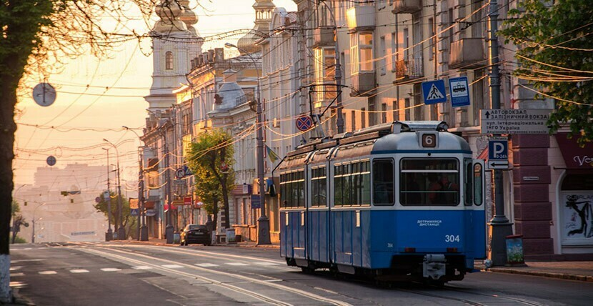
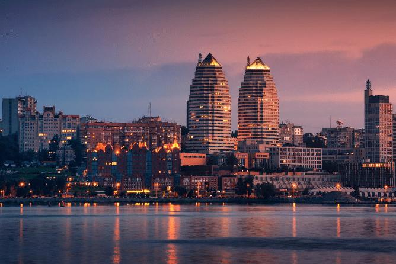
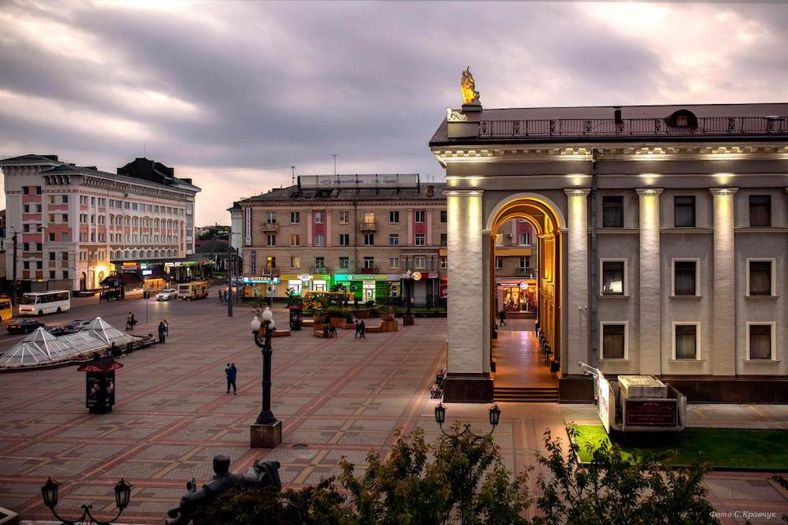
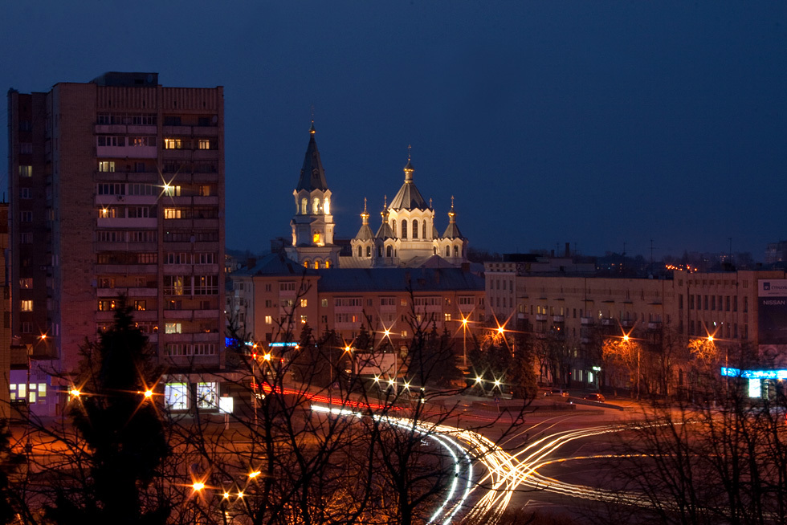
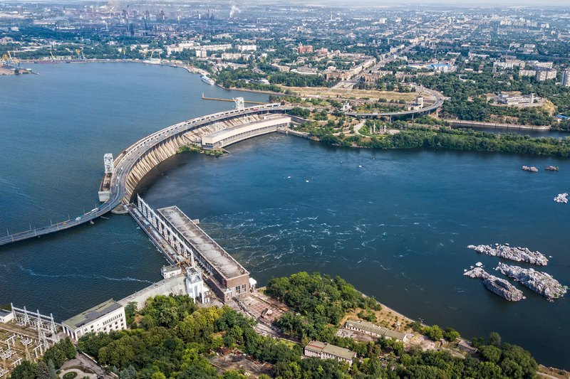
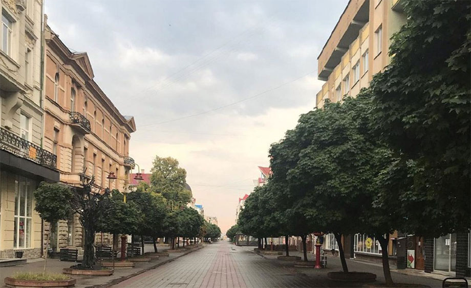
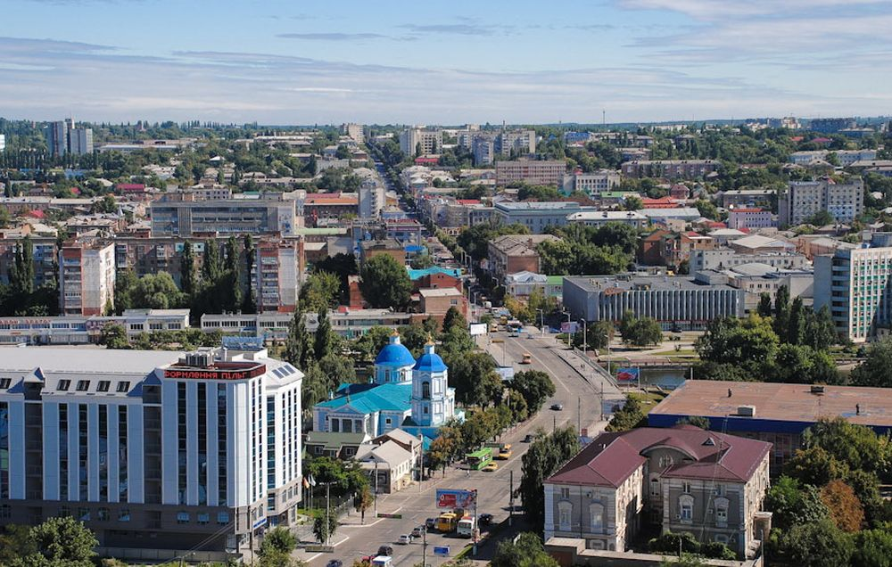
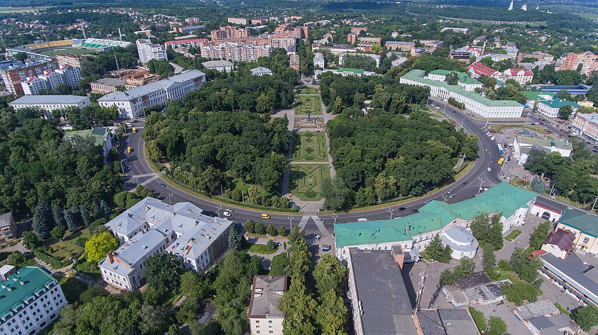
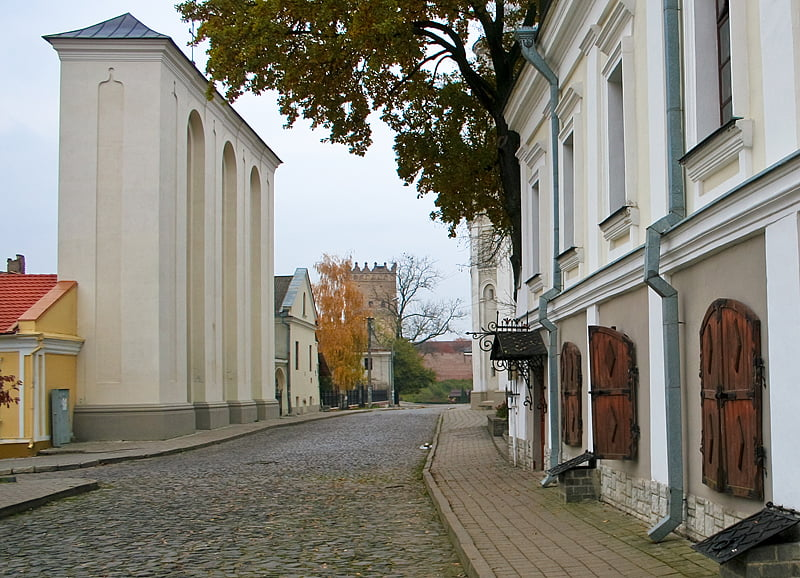

Цікаві факти про Україну
Ми обрали 10 цікавих факти про Україну та розкажемо про них.
Вінниця
В Вінниці до Другої світової війни третина населення були євреями. Зараз у місті є кілька синагог, єврейські школи, єврейський цвинтар та житловий район Єрусалимка, а також тут відзначають єврейське свято Хануку.
Дніпро
В Дніпрі знаходиться одна з найдовших і найбільш мальовничих у світі набережних. Вона простяглася на 23 кілометри.
Рівне
В Рівному був знайдений бурштин віком 40 мільйонів років, в якому були виявлені стародавні скорпіони, павуки, мурахи та інші комахи. Цей бурштин утворився в той час, коли територія України була островом, а на місці Польщі було море.
Житомир
Житомир виробляє найбільше меду в Україні, а також чверть всього українського морозива.
Запоріжжя
Острів Хортиця в Запоріжжі є найбільшим річковим островом в Україні та Європі, а також є історичним центром Запорізької Січі, що робить Запоріжжя "колискою козацтва".
Івано-Франківськ
Івано-Франківськ раніше носив назву Станіславів і був столицею Західно-Української Народної Республіки в 1919 році. Свою сучасну назву отримав у 1962 році на 300-річчя міста.
Київ

В Києві знаходиться найглибша станція метро в світі - "Арсенальна". Спуск на станцію на ескалаторі займає більше п'яти хвилин.
Кропивницький
Кропивницький за свою історію змінив 6 назв. Зараз це єдиний в Україні обласний центр, який названий на честь театрального діяча - творця українського театру Марка Лукича Кропивницького
Полтава
Полтава вважається батьківщиною української розмовної мови. Саме тут народився і жив Іван Котляревський, автор першої поеми українською мовою.
Луцьк
В Луцьку знаходиться найдовший в Європі житловий будинок. Його сумарна довжина - понад 2,5 км, а всього в будинку 120 під'їздів.